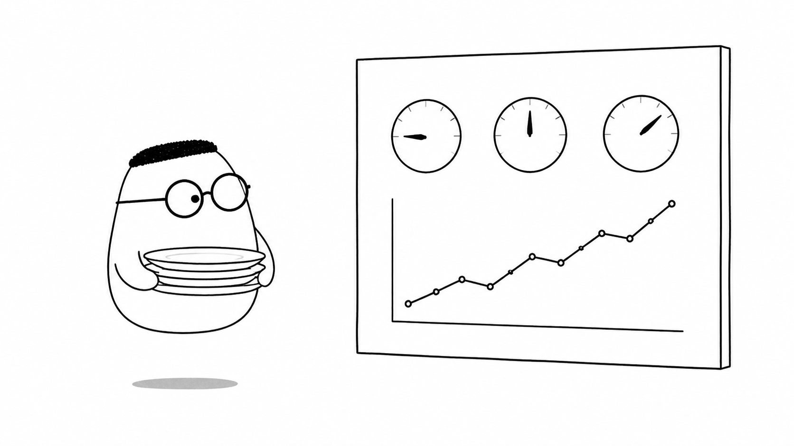
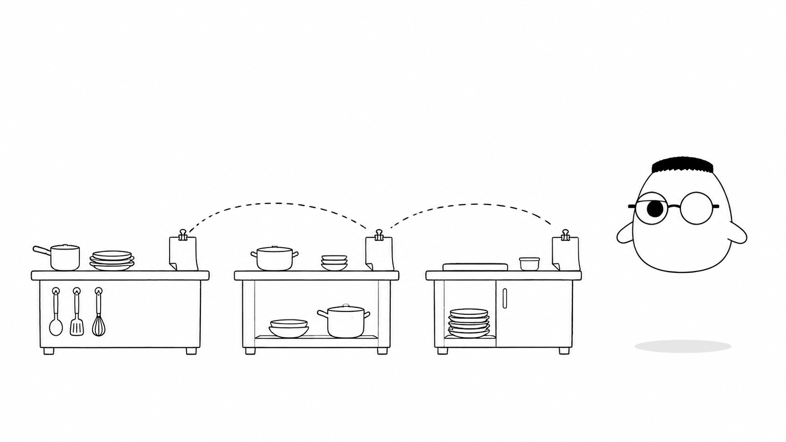

Masalah sehari-hari
Dapur restoran bekerja cepat. Pesanan masuk, bahan bergerak, pembayaran diproses, dan kurir menunggu. Sesekali satu langkah macet. Tanpa catatan, tim hanya tahu bahwa tamu kecewa. Mereka tidak tahu langkah mana yang terlambat.
Backend juga begitu. Saat service menjadi lambat, kita perlu bukti yang bisa dibaca setelah kejadian lewat. Catatan kejadian membantu mencari apa yang terjadi. Angka ringkas menunjukkan apakah masalahnya kecil atau menyebar. Jejak perjalanan menunjukkan titik yang menahan satu request.
Analogi Kuka
Kuka membayangkan backend sebagai dapur dengan tiga alat. Buku harian mencatat kejadian satu per satu. Papan pantau merangkum keadaan dapur dalam angka. Nomor pada tiket mengikuti satu pesanan dari pintu masuk sampai meja pengambilan.
Ketiganya menjawab pertanyaan yang berbeda. Buku harian menjawab apa yang terjadi. Papan pantau menjawab pola yang sedang terbentuk. Nomor tiket menjawab di mana waktu pesanan habis.
Peta istilah dapur
log adalah satu catatan kejadian dengan waktu dan konteks. metrics adalah angka yang diringkas dari banyak kejadian. tracing adalah jejak satu request dari awal sampai akhir. alert adalah bel peringatan. Dasbor adalah papan pantau yang menyatukan pandangan.
Ilustrasi
Satu catatan yang rapi lebih berguna daripada ingatan samar. Papan pantau membuat perubahan terlihat. Jejak tiket membantu tim menghubungkan satu keluhan dengan langkah yang menyebabkannya.
Penjelasan konsep
Logging berarti mencatat peristiwa penting selama aplikasi berjalan. Catatan yang baik memuat waktu, nama service, jenis kejadian, hasil, dan identitas request. Catat pesanan dibuat, pembayaran gagal, koneksi database putus, atau pekerjaan latar selesai. Jangan mengisi buku dengan setiap gerakan kecil yang tidak membantu pencarian masalah.
Level log mengatur tingkat perhatian. info untuk kegiatan normal yang berhasil. warn untuk hal aneh yang belum menggagalkan pekerjaan. error untuk kegagalan yang perlu ditangani. debug berguna saat mencari masalah di development. Di produksi, pilih level minimum agar volume catatan tetap terkendali.
Structured logging menulis setiap catatan dengan pola field yang sama. Waktu, level, request ID, nama service, dan pesan berada di tempat yang konsisten. JSON mudah dibaca oleh tool. Teks bebas mungkin nyaman di terminal, tetapi lebih sulit dihitung ketika semua catatan dikumpulkan.
Metrics merangkum banyak kejadian menjadi angka. Hitung jumlah request, tingkat error, waktu tunggu, koneksi database, dan panjang antrean. Counter biasanya bertambah. Gauge bisa naik atau turun. Histogram membantu melihat sebaran waktu, termasuk p95 atau p99 yang menggambarkan request paling lambat.

Tracing mengikuti satu request melewati beberapa bagian. Setiap pekerjaan kecil menjadi span. Satu trace dapat menunjukkan handler, service, query database, dan API luar. Jika total waktu empat detik, span memperlihatkan apakah dapur, kasir, atau kurir yang menahannya.
Nomor tiket dan jejak
Request ID menempel pada satu pesanan. Service meneruskannya ke langkah berikutnya. Dengan begitu, tim dapat mencari semua catatan yang memiliki nomor sama. Distributed tracing menambahkan hubungan antarspan, sehingga perjalanan lintas service tetap terlihat.

Centralized logging mengumpulkan buku harian dari banyak service dan server ke satu tempat. Tim tidak perlu masuk ke mesin satu per satu. Alert berbunyi ketika angka penting melewati batas yang masuk akal. Dasbor menampilkan metrics, catatan, dan jejak dalam tampilan yang bisa diperiksa cepat.
Observability bukan satu tool. Ia adalah kebiasaan membuat sistem memancarkan bukti yang berguna. OpenTelemetry dapat membantu mengirim catatan, metrics, dan tracing ke tool seperti Grafana, Jaeger, atau layanan terkelola. Mulai dari sinyal yang paling membantu pengguna, lalu tambah perlahan.
Diagram alur
Kejadian dimulai di dapur. Satu baris masuk ke buku harian. Angka di papan pantau berubah. Jika batas terlewati, alert berbunyi. Saat tamu komplain, tim memakai nomor tiket untuk menemukan langkah yang lambat.
Contoh mini
{"waktu":"12:04","level":"error","pesanan":"#4821","kejadian":"pembayaran gagal","request_id":"r-82"}
Manager membaca: pesanan #4821 gagal di pembayaran pada 12:04, lalu menelusuri r-82.
Satu baris memberi bentuk yang konsisten. Manajer bisa menyaring semua kegagalan pembayaran, melihat waktunya, dan membuka jejak pesanan itu. Ia tidak perlu menebak dari coretan panjang.
Ringkasan
- Logging mencatat kejadian penting dengan waktu dan konteks yang cukup.
- Level log membedakan kegiatan normal, peringatan, dan kegagalan.
- Structured logging memakai field berpola agar mudah dicari dan dihitung.
- Metrics merangkum jumlah, tingkat error, waktu tunggu, dan kapasitas.
- Tracing mengikuti satu request melalui handler, service, database, dan API lain.
- Centralized logging, alert, dan dasbor membantu tim melihat masalah lebih cepat.
- Observability tumbuh bertahap dari bukti yang berguna, bukan dari banyak tool sekaligus.
Pertanyaan pemahaman
- Apa beda buku harian (log) dan papan pantau (metrics)?
- Kenapa catatan harus berpola rapi (structured)?
- Apa gunanya nomor tiket (tracing) saat tamu komplain pesanan lambat?
Mau lebih dalam
Versi teknis membahas instrumentasi, OpenTelemetry, Prometheus, Grafana, ELK, desain alert, dan alur debugging produksi dengan contoh Go serta Python.
Disinggung sekilas
Belum dibahas di sini
Kode middleware, konfigurasi collector, dan aturan alert lengkap ada di versi teknis.